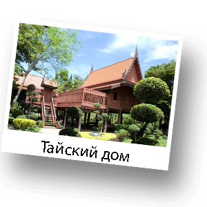

Традиции и культура Таиланда

Народ Таиланда считается очень дружелюбным и миролюбивым. По мнению многих социологов, это во многом связано с тем, что более 90 % населения исповедует буддизм, одну из самых толерантных по отношению к другим верованиям религию. К тому же, буддизм отрицает насилие. На сегодняшний день в Таиланде существует около 32 тысяч монастырей. Религия имеет большую поддержку у жителей страны.
Если говорить о традициях, то жизнь тайца от рождения и до смерти - это череда ритуалов. Так, например, на третий день рождения ребенка в доме его матери собираются ближайшие родственники. Они по очереди берут ребенка на руки, разглядывают его и отмечают всяческие недостатки, даже те, которых в действительности нет. Это делается для того, чтобы дух-хранитель Кхван, поселяющийся в голове каждого человека, не покинул дитя в это время, посчитав, что ребенок и так хорош и хранитель ему не нужен. По сути, родня просит духа остаться с ребенком и вести его по жизни.
Дом - основное в жизни тайца: здесь рождаются, живут и умирают. С возведением дома связан праздник закладки первой сваи. В настоящее время у новостроек можно увидеть сваю, обвязанную разноцветными ленточками - это древняя традиция привлечения добрых духов, которые впоследствии будут охранять дом. Важным условием при его возведении является ориентация по частям света.
В Таиланде не принято приветствовать друг друга рукопожатием. Тайское приветствие - это сложенные как для молитвы ладони (подобный жест носит название «wai»), распложенные на уровне груди.
Также большое значение для тайцев имеет цвет. Легенда о двенадцати мудрецах гласит, что цвета дней недели являются цветами ангелов, их ношение помогает отвести ненастья и расчистить путь к ангелам. Каждый таец знает свой цвет, но к этой традиции в последние годы относятся условно. Дням недели соответствуют следующие цвета:
- понедельнику - желтый;
- вторнику - розовый;
- среде - зеленый;
- четвергу - оранжевый;
- пятнице - синий;
- субботе - фиолетовый или черный цвета;
- воскресенью соответствует красный цвет.